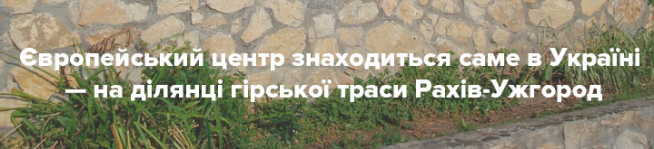

Факт №1
Хоч наша країна й розташована у Східній Європі, європейський центр знаходиться саме в Україні! На ділянці звивистої гірської траси Рахів-Ужгород встановлений двометровий знак, що засвідчує географічний центр Європи. 1887 року (тоді Закарпаття належало Австро-Угорщині) з метою побудови залізної дороги інженери дізналися, що десь у цій місцині має бути центр Європи. Запрошені віденські вчені підтвердили здогадки та встановили геодезичний знак у вигляді бетонної плити, що засвідчував їхню знахідку.
Хоч наша країна й розташована у Східній Європі, європейський центр знаходиться саме в Україні! На ділянці звивистої гірської траси Рахів-Ужгород встановлений двометровий знак, що засвідчує географічний центр Європи. 1887 року (тоді Закарпаття належало Австро-Угорщині) з метою побудови залізної дороги інженери дізналися, що десь у цій місцині має бути центр Європи. Запрошені віденські вчені підтвердили здогадки та встановили геодезичний знак у вигляді бетонної плити, що засвідчував їхню знахідку.
Факт №2

Видатний австрійський композитор Людвіг ван Бетховен присвятив дві симфонії українцеві. Ім’я щасливчика, на честь якого було створено два твори, – Андрій Розумовський, син останнього українського гетьмана. Андрій Кирилович Розумовський був гарним дипломатом і меценатом Бетховена. Майже все життя він провів у Відні, де й познайомився з композитором. Дружба між чоловіками стала причиною присвяти Андрієві Розумовському 5-ї та 6-ї симфоній.
Факт №3
Українець Юрій Бурдяк врятував життя Вінстону Черчіллю. За матеріалами Історичної правди, під час англо-бурської війни в Африці Черчілль потрапив у полон. Тоді він іще був просто журналістом. Бурдяк, який був командиром одного з загонів бурів, врятував майбутнього лідера Англії від розстрілу. На знак подяки останній забезпечив українцеві навчання в Оксфорді.
Факт №4
Україна має найбільшу кількість фахівців у галузі IT в Європі. Наразі більше 100 тисяч українських IT-працівників заробляють на життя програмуванням.
Для роботи будь-якому програмісту потрібні не лише Інтернет та комп’ютер, але й володіння певними професійними якостями та знаннями у даній сфері, без яких важко знайти хорошу роботу.
Особисті якості:
- програміст повинен бути витривалим та терплячим, адже часто приходитиметься працювати у позаробочий час та виникатимуть баги, які потребуватимуть виправлення;
- також важливим є вміння швидкого пристосування до змін, так як технології постійно змінюються, вдосконалюються, змінюється колектив, оточення;
- необхідно вміло використовувати технології у різних випадках;
- аналітичні здібності та хороша пам’ять є невід’ємною частиною;
- наявність позитивного мислення;
- вміння працювати в команді;
- ефективна комунікація.
Програмісти бувають різних рангів:
- Junior – молодший розробник, який немає великого практичного досвіду, тільки розпочинає свою професійну діяльність;
- Middle – спеціаліст, який уже набрався певного досвіду та реалізував декілька проектів, виконує завдання із тестування та інші;
- Senior – відповідає за якість та своєчасність роботи, вирішує складні технічні завдання, розробляє програмні системи.